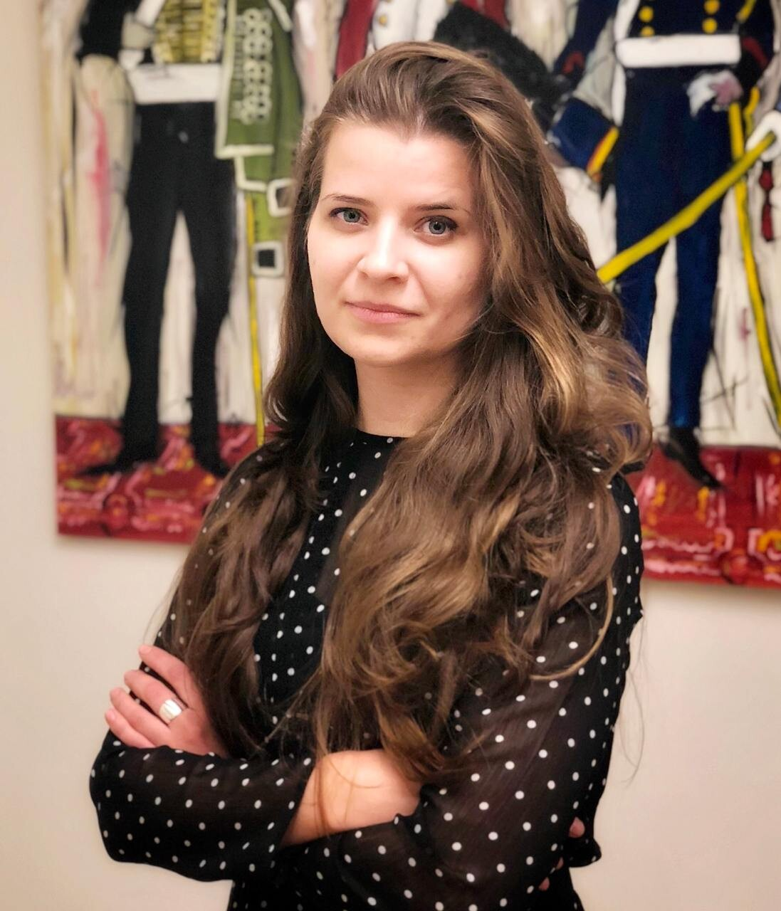

於 WIPE-OUT 2 / ECML PKDD 發表 LENS
我在那不勒斯舉行的第二屆機器遺忘與隱私保護工作坊發表了 Between Suppression and Collapse: Evaluating Narrative Unlearning with LENS，這篇論文由我與 George Fletcher 合著。 發表詳情
博士生 · UCU / 研究工程師 · Lapa LLM
我研究大型語言模型的「遺忘」究竟意味著什麼，以及如何打造能夠遺忘的模型。
我是烏克蘭天主教大學的博士生，也是 Lapa LLM 的研究工程師。我的工作結合機器遺忘、機制可解釋性、資訊完整性與負責任的資料系統。

近期動態
我在那不勒斯舉行的第二屆機器遺忘與隱私保護工作坊發表了 Between Suppression and Collapse: Evaluating Narrative Unlearning with LENS，這篇論文由我與 George Fletcher 合著。 發表詳情
FairForget 透過 EuroHPC Development Access 計畫，獲得尤利希超級運算中心 JUPITER Booster 為期六個月的運算資源。我是這項資源申請計畫的主持人，資源將用於支持我們對機器遺忘公平性的研究。 EuroHPC 計畫
我與 Tetiana Zakharchenko 共同研究機器遺忘如何影響公平性與隱藏偏誤。 計畫公告
我在利維夫的 Align, Forget, Repeat 活動中，探討 LLM 能否在保留能力的同時遺忘資訊。 演講詳情
大型語言模型中的記憶、抹除與責任。
我的博士研究探討：何時能說一個 LLM「知道」某件事？當我們試圖移除這項知識時，會改變什麼？又該如何驗證遺忘確實發生，而非僅僅宣稱如此？我研究機器遺忘的技術過程，也關注決定模型不應再保留哪些內容所帶來的責任。核心問題之一，是機制可解釋性如何為機器遺忘提供依據。
閱讀博士研究計畫研究主軸
貫穿研究與教學的相關問題。
模型保留了什麼、如何驗證遺忘，以及機制可解釋性如何為遺忘提供依據。
透過機器遺忘減輕不實資訊的影響、遺忘敘事並降低偏誤。
人、機構與未被看見的實體如何納入資料模型。
2025–2026
2026
開放資源與協作技術專案。
我與 Oleksandra Ostafiichuk、Tetiana Zakharchenko 共同完成 StereoSet 的烏克蘭語翻譯與調整。
筆記
研究背後概念的整理與說明。
從儲存空間刪除一筆紀錄，不一定能消除它對已訓練模型的影響。我們可以區分四個相關概念：抹除是刪除資料物件或停用存取；機器遺忘旨在移除或限制其對模型的影響；排除涉及哪些內容不蒐集、不標註或不納入；而遺忘則涵蓋更廣泛的技術與制度過程。
實務上的難題在於驗證。評估需要釐清目標影響還剩多少，以及測試能偵測到什麼。同時，也需要記錄改了什麼、由誰修改，以及這些改動如何影響模型保留的其他能力。
相關論文單看一次編輯或一則訊息，往往不容易察覺操弄。某個句子單獨看來可能很中立，卻同時參與了跨來源、頻道或時間反覆出現的敘事。
我對維基百科編輯與 Telegram 頻道的研究，會在這些尺度之間切換：辨識局部文字訊號、彙整相關主張，再檢視敘事被放大的傳播網絡。
碩士論文資料模型並非中立的清單。關於實體、關係與抽象層次的決定，會界定系統能記錄什麼，以及哪些事物仍不可見。
ONION 透過利害關係人的參與，讓這些決策變得可見。GARLIC 將此方法用於教學，透過角色扮演協助學生檢視模型呈現了誰的需求，以及哪些地方需要修訂。
相關論文學經歷
我在 Lapa LLM 研究減輕不實資訊影響的策略、敘事遺忘，以及透過機器遺忘降低偏誤。
Lapa LLM 專案 ↗我是 Responsible AI for Ukraine 計畫的研究導師。這項計畫透過 NYU 與 UCU，連結烏克蘭學生及研究人員。
研究與論文指導 ↗我在烏克蘭天主教大學教授自然語言處理，將應用任務、研究、倫理及專題評量結合於課程中。
NLP 課程與教材我擔任基輔美國大學的客座講師，在 Technology Leadership & AI 碩士學程教授網頁式決策支援系統（SDT 520）。我於 2025 年及 2026 年春季開授這門課。
AUK 課程詳情我於 2025 年 6 月以優異成績取得 UCU 資料科學碩士學位，並於同年 10 月開始博士班研究。我也持有哈爾科夫國立無線電電子大學的無線電工程碩士學位。攻讀博士之前，我有超過七年的軟體工程與技術領導經驗，包括在 Artur’In 的工作。
履歷（英文）我尤其歡迎在 LLM 遺忘、機制可解釋性與負責任 AI 方面的研究合作，也歡迎演講邀約、學生專題，以及其他共同工作的機會。
聯絡我 ↗George Fletcher, Julia Stoyanovich與 Tetiana Zakharchenko.
研究詳情